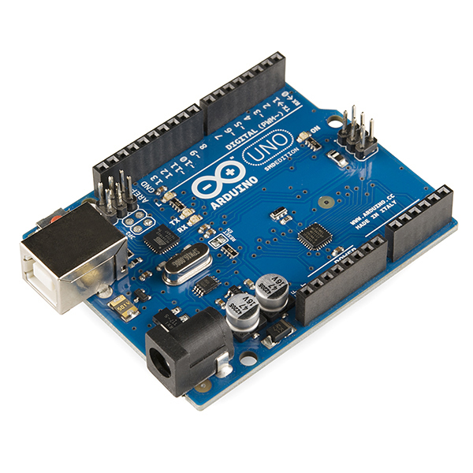

Arduino
Conceito, funcionamento e exemplos de programação com 12 sensores IoT e industriais.

O que é o Arduino?
O Arduino é uma plataforma de prototipagem eletrônica de código aberto (hardware e software), composta por uma placa com microcontrolador e um ambiente de desenvolvimento (IDE) próprio, baseado na linguagem C/C++. Criado em 2005 na Itália com foco educacional, hoje é amplamente utilizado em projetos de automação, robótica e Internet das Coisas por sua simplicidade e baixo custo.
A placa mais popular, o Arduino Uno, utiliza o microcontrolador ATmega328P e oferece 14 pinos digitais (dos quais 6 podem gerar PWM), 6 entradas analógicas, memória flash de 32KB e comunicação serial UART, além de suporte a protocolos I2C e SPI.
Características e Funcionamento
Microcontrolador
Executa o programa (sketch) gravado, lendo entradas e controlando saídas em loop contínuo.
Entradas e Saídas
Pinos digitais (HIGH/LOW) e analógicos (0-1023) conectam sensores e atuadores à placa.
Programação
IDE própria, linguagem baseada em C/C++, estruturada em setup() e loop().
Alimentação
Via cabo USB (5V) ou fonte externa (7-12V) através do conector Jack.
Prós
Fácil de aprender, acessível e ideal para iniciantes em eletrônica e programação. Comunidade ativa oferece bibliotecas prontas para praticamente qualquer sensor, acelerando o desenvolvimento de projetos.
Contras
Capacidade de processamento e memória limitadas frente a controladores industriais (CLPs) ou placas como ESP32/Raspberry Pi, o que pode restringir o uso em aplicações de maior desempenho ou com muitos sensores simultâneos.
Exemplos de Programação
Abaixo estão 12 exemplos de leitura/uso de sensores com Arduino, cobrindo sinais analógicos, digitais e comunicação via protocolos I2C/SPI/pulsos.
1. DHT22 — Temperatura e Umidade
// leitura de temperatura e umidade com o DHT22
#include <DHT.h>
#define DHTPIN 2
#define DHTTYPE DHT22
DHT dht(DHTPIN, DHTTYPE);
void setup() {
Serial.begin(9600);
dht.begin();
}
void loop() {
float umidade = dht.readHumidity();
float temperatura = dht.readTemperature();
Serial.print("Temperatura: ");
Serial.print(temperatura);
Serial.print(" C Umidade: ");
Serial.print(umidade);
Serial.println(" %");
delay(2000); // DHT22 exige intervalo minimo entre leituras
}2. LM35 — Temperatura Analógica
// leitura de temperatura com o LM35 (saida analogica)
const int pinoLM35 = A0;
void setup() {
Serial.begin(9600);
}
void loop() {
int leitura = analogRead(pinoLM35);
float tensao = leitura * (5.0 / 1023.0);
float temperatura = tensao * 100; // 10 mV por grau Celsius
Serial.print("Temperatura: ");
Serial.print(temperatura);
Serial.println(" C");
delay(1000);
}3. HC-SR04 — Distância Ultrassônica
// medicao de distancia com sensor ultrassonico HC-SR04
const int trigPin = 9;
const int echoPin = 10;
void setup() {
Serial.begin(9600);
pinMode(trigPin, OUTPUT);
pinMode(echoPin, INPUT);
}
void loop() {
digitalWrite(trigPin, LOW);
delayMicroseconds(2);
digitalWrite(trigPin, HIGH);
delayMicroseconds(10);
digitalWrite(trigPin, LOW);
long duracao = pulseIn(echoPin, HIGH);
float distanciaCm = duracao * 0.0343 / 2;
Serial.print("Distancia: ");
Serial.print(distanciaCm);
Serial.println(" cm");
delay(500);
}4. PIR HC-SR501 — Detecção de Movimento
// deteccao de presenca com sensor PIR
const int pinoPIR = 3;
const int pinoLed = 13;
void setup() {
Serial.begin(9600);
pinMode(pinoPIR, INPUT);
pinMode(pinoLed, OUTPUT);
}
void loop() {
int movimento = digitalRead(pinoPIR);
if (movimento == HIGH) {
digitalWrite(pinoLed, HIGH);
Serial.println("Movimento detectado!");
} else {
digitalWrite(pinoLed, LOW);
}
delay(100);
}5. LDR — Luminosidade
// leitura de luminosidade com LDR em divisor de tensao
const int pinoLDR = A1;
const int limiarEscuro = 300;
void setup() {
Serial.begin(9600);
pinMode(13, OUTPUT);
}
void loop() {
int luminosidade = analogRead(pinoLDR);
Serial.println(luminosidade);
if (luminosidade < limiarEscuro) {
digitalWrite(13, HIGH); // aciona iluminacao
} else {
digitalWrite(13, LOW);
}
delay(500);
}6. Sensor Indutivo LJ12A3 — Proximidade Metálica
// contagem de pecas metalicas com sensor indutivo (saida NPN)
const int pinoSensor = 4;
int contador = 0;
int estadoAnterior = HIGH;
void setup() {
Serial.begin(9600);
pinMode(pinoSensor, INPUT_PULLUP);
}
void loop() {
int estadoAtual = digitalRead(pinoSensor);
if (estadoAtual == LOW && estadoAnterior == HIGH) {
contador++;
Serial.print("Pecas detectadas: ");
Serial.println(contador);
}
estadoAnterior = estadoAtual;
delay(20);
}7. MQ-2 — Gás e Fumaça
// deteccao de gas/fumaca com o MQ-2
const int pinoMQ2 = A2;
const int limiarAlarme = 400;
void setup() {
Serial.begin(9600);
pinMode(8, OUTPUT); // buzzer/alarme
}
void loop() {
int nivelGas = analogRead(pinoMQ2);
Serial.println(nivelGas);
if (nivelGas > limiarAlarme) {
digitalWrite(8, HIGH);
Serial.println("ALERTA: gas/fumaca detectados!");
} else {
digitalWrite(8, LOW);
}
delay(1000);
}8. Umidade do Solo — Irrigação Automática
// leitura de umidade do solo e acionamento de irrigacao
const int pinoSolo = A3;
const int pinoValvula = 7;
const int limiarSeco = 600; // ajustar conforme calibracao
void setup() {
Serial.begin(9600);
pinMode(pinoValvula, OUTPUT);
}
void loop() {
int umidadeSolo = analogRead(pinoSolo);
Serial.println(umidadeSolo);
if (umidadeSolo > limiarSeco) {
digitalWrite(pinoValvula, HIGH); // liga irrigacao
} else {
digitalWrite(pinoValvula, LOW);
}
delay(2000);
}9. YF-S201 — Vazão de Água
// medicao de vazao de agua com sensor de efeito Hall
const int pinoFluxo = 2;
volatile int pulsos = 0;
const float pulsosPorLitro = 4.5;
void contarPulso() {
pulsos++;
}
void setup() {
Serial.begin(9600);
pinMode(pinoFluxo, INPUT_PULLUP);
attachInterrupt(digitalPinToInterrupt(pinoFluxo), contarPulso, RISING);
}
void loop() {
pulsos = 0;
delay(1000); // janela de 1 segundo
float litrosPorMinuto = (pulsos / pulsosPorLitro) * 60.0;
Serial.print("Vazao: ");
Serial.print(litrosPorMinuto);
Serial.println(" L/min");
}10. ACS712 — Corrente Elétrica
// medicao de corrente eletrica com o ACS712 (modulo 20A)
const int pinoACS712 = A4;
const float sensibilidade = 0.100; // 100 mV/A para o modulo de 20A
const float tensaoRepouso = 2.5; // tensao de saida sem corrente
void setup() {
Serial.begin(9600);
}
void loop() {
int leitura = analogRead(pinoACS712);
float tensao = leitura * (5.0 / 1023.0);
float corrente = (tensao - tensaoRepouso) / sensibilidade;
Serial.print("Corrente: ");
Serial.print(corrente);
Serial.println(" A");
delay(500);
}11. Sensor de Nível (Boia) — Controle de Reservatório
// controle de bomba com sensor de nivel tipo boia
const int pinoBoia = 5;
const int pinoBomba = 6;
void setup() {
Serial.begin(9600);
pinMode(pinoBoia, INPUT_PULLUP);
pinMode(pinoBomba, OUTPUT);
}
void loop() {
int nivelBaixo = digitalRead(pinoBoia); // LOW = boia caida (nivel baixo)
if (nivelBaixo == LOW) {
digitalWrite(pinoBomba, HIGH); // liga a bomba de reposicao
Serial.println("Nivel baixo: bomba ligada");
} else {
digitalWrite(pinoBomba, LOW);
Serial.println("Nivel OK: bomba desligada");
}
delay(1000);
}12. MFRC522 — Leitura de Cartão RFID
// leitura de UID de cartao RFID com o modulo MFRC522
#include <SPI.h>
#include <MFRC522.h>
#define SS_PIN 10
#define RST_PIN 9
MFRC522 leitor(SS_PIN, RST_PIN);
void setup() {
Serial.begin(9600);
SPI.begin();
leitor.PCD_Init();
}
void loop() {
if (!leitor.PICC_IsNewCardPresent() || !leitor.PICC_ReadCardSerial()) {
return;
}
Serial.print("UID do cartao: ");
for (byte i = 0; i < leitor.uid.size; i++) {
Serial.print(leitor.uid.uidByte[i], HEX);
Serial.print(" ");
}
Serial.println();
leitor.PICC_HaltA();
}